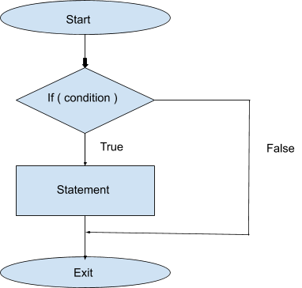
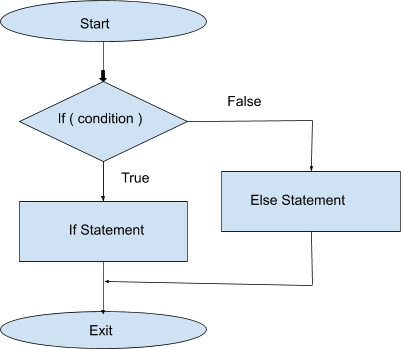

Conditional Statements are also known as Decision Making. Conditional Statements are used when we have to check if the following condition is true or not, and if it is true then we perform certain actions, else we move forward.
For example, Let's assume that int x=10 and we can check if x>0 then print yes.
Following are various types of conditional statements:-
if statements:- We check if a particular condition is true or not. If it is true then we execute the block of code associated with it.
if-else statements:- If the condition in IF statement is false then the ELSE statement will be executed.
if else-if statements:- We check which condition is true, and as soon as a condition comes out to be true we execute the block of code and we don't check any other condition. If none of the conditions are true then nothing is executed.
if else-if else statements:- First we check IF condition and if it evaluates false then we check ELSE IF’s, if any of them is true then we execute the block of code associated with it and don't check any other statements. But if none of the statements are true then the else statement is executed. And ElSE block is optional.
Nested if-else:- When a conditional statement contains another conditional statement inside it then its called a nested conditional statements. We can create nested if-else by putting an if-else statement inside an if or else if or else statement.
Switch:- Switch statement checks various conditions for the same variable and executes the condition which is true.
if statements:
if (expression)
statement
If the expression evaluates to true (non-zero), the statement executes.

Here is a simple program that uses an if statement:
Output: True
if-else statements:
if (expression)
statement1
else
statement2
If the expression evaluates to true (non-zero), the statement1 executes. If the expression evaluates to false, the else statement2 is executed if it exists.

Here is a simple program that uses an if else statement:
Output: False
if else-if statements:
We check which condition is true, and as soon as a condition comes out to be true we execute the block of code and we don't check any other condition. If none of the conditions are true then nothing is executed.
Here is a simple program that uses an if else-if statement:
Output: Two
Here we can see that the output is “Two” and not “Two Positive”.
if else-if else statements:
First, we check IF’s and ELSE IF’s, if any of them is true then we execute the block of code associated with it and don't check any other statements. But if none of the statements are true then the else statement is executed.
Here is a simple program that uses an if else-if else statement:
Input: 4 5 6
Output: 6 is largest
Nested if else statements:
Having an if-else statement inside another if statement is called nested if-else.
Here is a simple program that uses an nested if else statement:
Input: 5 6 3
Output: 6 is the largest
Switch statements:
Switch statement checks different cases for the same variable and executes the block of code for which the condition is true. It can have a default condition if the end which is similar to else condition.
Syntax:-
switch(expression) {
case constant-expression :
statement(s);
break; ( optional )
case constant-expression :
statement(s);
break; ( optional )
( you can have any number of case statements)
default : ( optional )
statement(s);
}
Here is a simple program that uses an switch statement:
Output: Hey,I'm 2.
I found 2.
Purpose of break in switch case:-
If we don't use switch then all the case statements preceding the true case will be implemented until a break statement is found, even if the given switch case is false.
Break is used to exit that particular loop and in the example when the break is called on line 8 then none of the cases from line 9 are checked and it exits the switch statements and reaches line 15.
Happy Coding 😊
By Programmers Army
Contributed by: Tanmay Garg